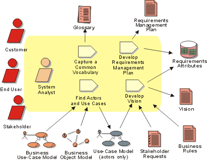

Disciplines >
Disciplines >
 Requirements >
Requirements >
 Workflow >
Analyze the Problem
Workflow >
Analyze the Problem
Disciplines >
Requirements >
Workflow >
Analyze the Problem
Workflow Detail:
|
Topics |
 |
The purpose of this workflow detail is to:
The first step in any problem analysis is to make sure that all parties involved agree on what is the problem that we are trying to solve with our system. In order to avoid misunderstandings, it is important to agree on common terminology which will be used throughout the project. Early on, we should begin defining our project terms in a glossary which will be maintained throughout the project lifecycle.
In order to fully understand the problem(s) we should be addressing, it is very important to know who are our stakeholders. Note that some of these stakeholders -- the users of the system -- will be represented by actors in our use-case model.
The Requirements Management Plan will provide guidance on the requirements artifacts that should be developed, the types of requirements that should be managed for the project, the requirements attributes that should be collected and the requirements traceability that will be used in managing the product requirements.
The primary artifact in which we document the problem analysis information is the Vision document, which identifies the high-level user or customer view of the system to be built. In the Vision, initial high-level requirements identify the key features it is desired the appropriate solution will provide. These are typically expressed as a set of high-level features the system might possess in order to solve the most critical problems.
Key stakeholders should be involved in gathering the set of features to be considered, which might be gathered in a Requirements Workshop. The features should be assigned attributes such as rationale, relative value or priority, source of request and so on, so that dependencies can begin to be managed.
To determine the initial scope for our project, the boundaries of the system must be agreed upon. The system analyst identifies users and systems - represented by actors - which will interact with the system.
If you have developed a domain model, a business use-case model or a business object model, these will be key input, along with the business rules, to helping to perform this analysis. See also Guidelines: Going from Business Models to Systems for more guidance.
This workflow detail should be revisited several times during inception and early elaboration. Then, throughout the lifecycle of the project, it should be revisited as necessary while managing the inevitable changes that will occur in our project, in order to ensure that we continue to address the correct problem(s).
The project members involved in analyzing the problem should be efficient facilitators and have experience in techniques for finding the problem behind the problem. Of course, familiarity with the targeted technology is desirable, but it is not essential. Active involvement from various stakeholders to the project is required.
The following are sample techniques that can be applied to find the problem behind the problem:
See also:
|
Rational Unified
Process
|